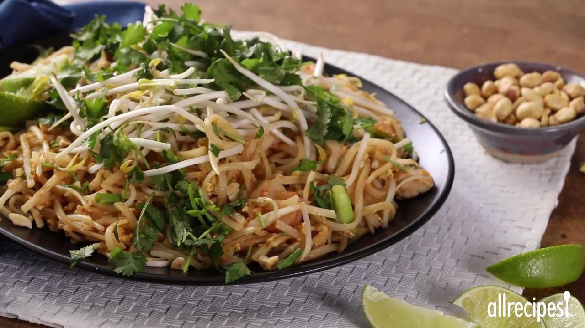

A Pad Thai Worth Making

Description
Pad thai, the wonderful national noodle dish of Thailand, is now served in many trendy restaurants. Make it at home with this recipe that can be adjusted to your taste. Add your favorite ingredients and make it as spicy or tart as you want to. It is also great as a basis for a stir-fry of leftovers. This is a recipe for those who like it hot — if you can't handle the heat, go easy on the chile sauce.
Ingredients
- 1 (8 ounce) package dried flat rice noodles
- ¼ cup fresh lime juice
- ¼ cup chicken stock
- 3 tablespoons fish sauce
- 2 tablespoons oyster sauce
- 1 tablespoon white sugar
- 5 teaspoons Asian chile pepper sauce, divided
- ¼ cup vegetable oil
- 1 tablespoon chopped garlic
- 8 ounces medium shrimp - peeled and deveined
- 8 ounces skinless, boneless chicken breast halves - cut into 1 inch cubes
- 2 large eggs, beaten
- 5 cups bean sprouts, divided
- 6 medium green onions, chopped into 1 inch pieces
- 2 tablespoons chopped unsalted dry-roasted peanuts
- ¼ cup chopped fresh cilantro
- 1 medium lime, cut into 8 wedges
Directions
- Fill a large bowl with hot tap water and place noodles in it to soak for 20 minutes.
- Stir together lime juice, chicken stock, fish sauce, lime juice, oyster sauce, sugar, and 2 teaspoons chile sauce in a small bowl. Set aside.
- Heat a wok or large skillet over high heat and add vegetable oil. When oil is hot, stir in garlic and cook for about 10 seconds. Add shrimp and chicken; cook, stirring constantly until shrimp is opaque and chicken is cooked through, 5 to 7 minutes.
- Move everything in the wok out to the sides and pour in eggs in the center. Cook and stir eggs until firm. Add noodles to the wok and pour in the sauce. Cook, stirring constantly, until noodles are tender. Add a bit more water if needed to finish cooking noodles.
- Stir in 3 cups bean sprouts, green onions, and remaining chile sauce. Remove from the heat and garnish with chopped peanuts. Taste for seasoning, adjusting the spice or lime juice if needed.
- Serve garnished with remaining 2 cups bean sprouts, fresh cilantro, and lime wedges on the side.